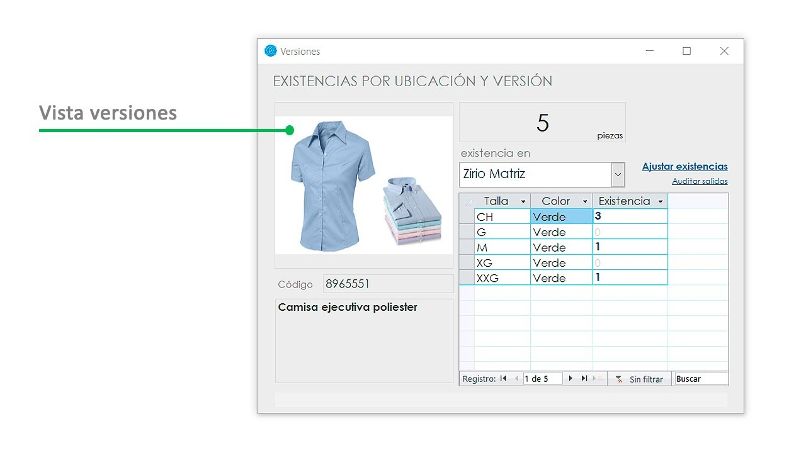

¡Abre las puertas de tu tienda de moda en línea con este tutorial completo de e-commerce de ropa! Aprende cómo crear una plataforma de venta atractiva y fácil de usar para presentar tus colecciones al mundo. Desde la configuración de la tienda hasta la gestión de inventario y la optimización del proceso de pago, este tutorial te ayudará a establecer y hacer crecer tu negocio de moda en línea.
Gestion de inventarios
BEC podría integrarse con sistemas de gestión de inventarios que ayuden a controlar el stock de productos disponibles para la venta. Esto garantizaría que los productos mostrados en la aplicación estén actualizados y sean precisos en términos de disponibilidad.
Empaque de productos
Una vez que los productos estén listos, se empacarían cuidadosamente para su envío. BEC podría tener estándares de empaque para garantizar que los productos lleguen a los clientes en condiciones óptimas.
Gestion de devoluciones

En caso de que un cliente desee devolver un producto, BEC podría facilitar el proceso de devolución a través de la aplicación. Los clientes podrían generar etiquetas de devolución y coordinar la recogida de los productos devueltos.
Opciones de entrega
BEC podría ofrecer opciones de entrega flexibles, como envío estándar, envío exprés o recogida en tienda, según la preferencia del cliente. Esto permitiría a los clientes elegir el método de entrega que mejor se adapte a sus necesidades y plazos de entrega.
Volver al Inicio